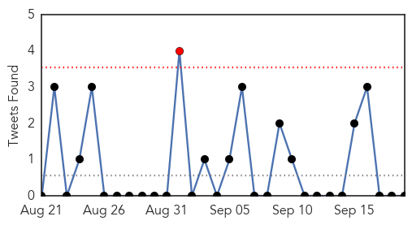
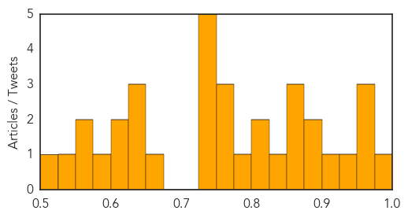

Dengue Fever
30-Day Web Trend
9 alerts, 1 warnings

30-Day Twitter Trend
0 alerts, 0 warnings

Article Locations

Article Confidences

Top Articles:
- 0.993
- Delhi government struggles with dengue outbreak
- 0.992
- First dengue case of the year found in Tanahun
- 0.992
- Hong Kong investigates possible indigenous dengue fever
- 0.986
- Dengue cases could spike: Centre issues advisory to Delhi govt after showers, asks it to step up measures
- 0.985
- Taiwan announces Dengue Treatment Centers, 600 more cases reported
- 0.984
- Tainan mayor puts DPP duties on hold
- 0.983
- Dengue: Delhi hospitals turning away patients may lose licence
- 0.980
- Dengue row: Health Ministry tells Delhi government to intensify control measures
- 0.976
- Climate change effects
- 0.971
- Dengue: Step up check on mosquito breeding after rain, Centre to Delhi govt
- 0.966
- New study reshapes how scientists look at dengue virus
- 0.961
- Rain adds another sting in aedes’ tail
- 0.951
- Delhi woman, 34, dies of of dengue fever bringing toll up to 21
- 0.951
- Multiple Times Dengue Infection Can be Life-Threatening
- 0.948
- Dengue fever alert issued in Bihar, number of cases cross 250-mark
- 0.943
- A new understanding of dengue virus
- 0.938
- Parents' suicide over son's death forces Delhi to boost dengue treatment
- 0.937
- '70 pc of dengue-affected patients acquired it outside state'
- 0.934
- At least 20 cases of high grade fever everyday
- 0.933
- 70 per cent of dengue-affected patients acquired it outside state
- 0.923
- Superspeciality hospitals open up for patients, ‘fever clinics’ to follow
- 0.919
- Guangdong reports 664 dengue cases
- 0.916
- Dengue: Step up check on mosquito breeding after rain, Centre
- 0.913
- Ministry issues fresh advisory to intensify combat against dengue
- 0.899
- Patients Wait For Treatment As Dengue Rush Swamps Delhi Hospitals
- 0.887
- Dengue Situation deteriorates in Odisha; Cases touch to 481 -
- 0.884
- Civic Body Not Doing Enough Fumigation, Say Citizens
- 0.862
- Rains may lead to spurt in dengue cases at National Capital
- 0.844
- The killer Dengue and the sordid saga of poor governance
- 0.843
- SMC fever helpline cold to callers
- 0.837
- Dengue menace: 4 more dead, toll 20
- 0.831
- Delhi government finally wakes up, russels up 400 beds for dengue patients
- 0.787
- NMC’s health department detects 7 dengue patients
- 0.784
- Awareness seminar, walk arranged at RMC & HFH
- 0.781
- Three from Odisha die of dengue in Mumbai; NRO toll seven
- 0.764
- Why second dengue infection can be life-threatening
- 0.722
- Dengue: Delhi govt increases 795 beds in private hospitals
- 0.715
- Four more die of dengue in Delhi, toll rises to 20
- 0.691
- Another dengue death in Delhi, toll 21
- 0.674
- Government rift with civic bodies behind dengue surge?
- 0.651
- Delhi’s battle: A day in the life of a dengue ward
- 0.583
- Delhi government’s fever/dengue clinics to open Monday
- 0.549
- Dengue triggers outbreak of politics in Delhi as death toll rises to 20
- 0.548
- FBC News
- 0.539
- Congress seeks emergency action plan to contain dengue toll
- 0.504
- MLA fought dengue at home, in constituency
Top Tweets:
-
No tweets found for Sep 19, 2015
Unknown
30-Day Web Trend
0 alerts, 0 warnings

30-Day Twitter Trend
3 alerts, 0 warnings

Article Locations

Article Confidences
Top Articles:
- 0.977
- Malaria deaths down 60%: WHO
- 0.970
- Time for flu vaccine, updated after misery of last winter
- 0.957
- Gastro outbreak following Tropical Storm Erika
- 0.954
- Saudi Minister Says MERS Outbreak is Ebbing in Advance of the Hajj
- 0.945
- Gonorrhea Strain Resistant To Azithromycin Drug Spreading
- 0.923
- Food poisoning cause still a mystery
- 0.892
- Devastated by Earthquake, Nepal’s Fragile Water Supply Is in Danger
- 0.880
- Arizona woman is third victim of widespread salmonella outbreak
- 0.871
- Drug resistant gonorrhoea outbreak triggers national alert
- 0.869
- Arizona woman is third victim of widespread salmonella outbreak
- 0.863
- First cases of dog rabies reported in Malaysia
- 0.838
- Lancaster Farming
- 0.822
- Pima County woman who reportedly ate tainted cucumbers dies - azfamily.com 3TV
- 0.812
- Texas Health Rockwall, Children’s Health partner to offer pediatric emergency care in Rockwall County
- 0.787
- City hospitals take ‘no-antibiotic’ call to check resistance
- 0.766
- Science confirms successful strategy to protect threatened steelhead from virus
- 0.756
- Pope Francis embarks on 10-day trip to Cuba and US
- 0.752
- Warning after new strain of gonorrhoea proves resistant to drugs
- 0.749
- USDA Introduces Controversial Measures Against Bird Flu
- 0.748
- Benin president signals return to civilian rule in Burkina Faso
- 0.748
- Ethiopian movie gets a boost from French film industry
- 0.732
- USDA says heat stress can be used to kill poultry in bird flu outbreak
- 0.729
- Kerry urges Moscow to help negotiate Assad exit
- 0.654
- Health D-G: Seek immediate treatment for dog-bites - Nation
- 0.647
- World Rabies Day in Harford offers annual pet vaccination clinic
- 0.638
- UPDATE 1-U.S. may use heat to kill poultry if bird flu strikes again
- 0.625
- Kedah Health Department confirms woman bitten by pet dog with rabies
- 0.607
- South Sudan: First there was war, now fire - South Sudan
- 0.604
- Patients at Trinity Medical Center quarantined with scabies
- 0.595
- Millions of children's lives saved as malaria deaths plunge -UN
- 0.575
- Somaliland:More than 240,000 people in the Country Face Starvation-Aid Agencies -
- 0.562
- `60% drop in malaria deaths since 2000′
- 0.533
- State News
- 0.513
- Algae blooms detected in Owasco Lake, Lake Como
Top Tweets:
- 0.782
- RT: Uno queriendo madurar y convertirse en un adulto responsable y Warner pasando un maratón de los thundercats asà no se pu…
- 0.759
- RT: Todo procede de un libro y todo termina en un libro.
- 0.696
- RT: Otro fin de semana sin salir y me hacen un cuadro en el Vaticano.
- 0.609
- RT: NoMeGusta Las personas que se sienten victimas de la vida... vayan a trabajar en una novela pendejos..
- 0.599
- https://t.co/ruMhCetG64 ... Merecerá la pena vivir en él. Sexo en vez de guerra.
- 0.573
- RT: -Pasaste todas las materias de este semestre con 10! -Si, pero con un millón de toneladas de orgullo!!!😋
- 0.557
- ¿Alguien me puede ayudar con un sitio para quedarme de hoy para mañana en San Juan? Puede ser en un sofá o un piso con sábanas (o sin ellas)